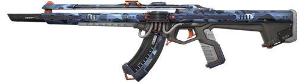
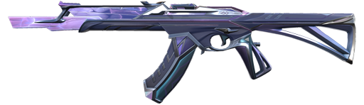
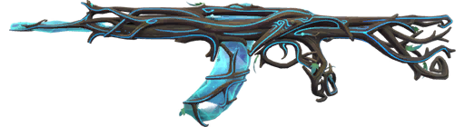
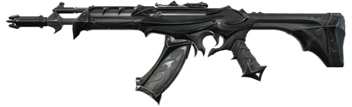
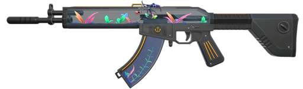

PRELUDE TO CHAOUS

Prelude to Chaos Vandal" skin exudes an otherworldly aura with its dark, ethereal motifs, intertwining shadowy tendrils, and iridescent accents. Its sleek, nightmarish design epitomizes the impending storm of chaos, making it a formidable choice for any daring Valorant player.
SENTINELS OF LIGHT

Sentinels of Light Vandal skin exudes an ethereal radiance, adorned with luminescent sigils that pulse with power. Its sleek design and vibrant color palette embody the valor of the Sentinels in their fight against the darkness.
GAIA'S VENGANCE

Gaia's Vengeance Vandal skin embodies nature's wrath with intricate leaf motifs and vibrant, earthy tones. Its intricate design evokes a powerful connection to the natural world, making it a fearsome choice for eco-conscious agents.
REAVER

Reaver Vandal is a sleek, obsidian-black rifle skin in Valorant, featuring crimson accents and eerie skull motifs, exuding a menacing and formidable presence on the battlefield.
NEPTUNE

Neptune Vandal skin features a sleek black and aqua design, resembling the depths of the ocean. Its futuristic accents and aquatic motifs give it a distinct, high-tech aesthetic, making it a standout choice for any Valorant player.